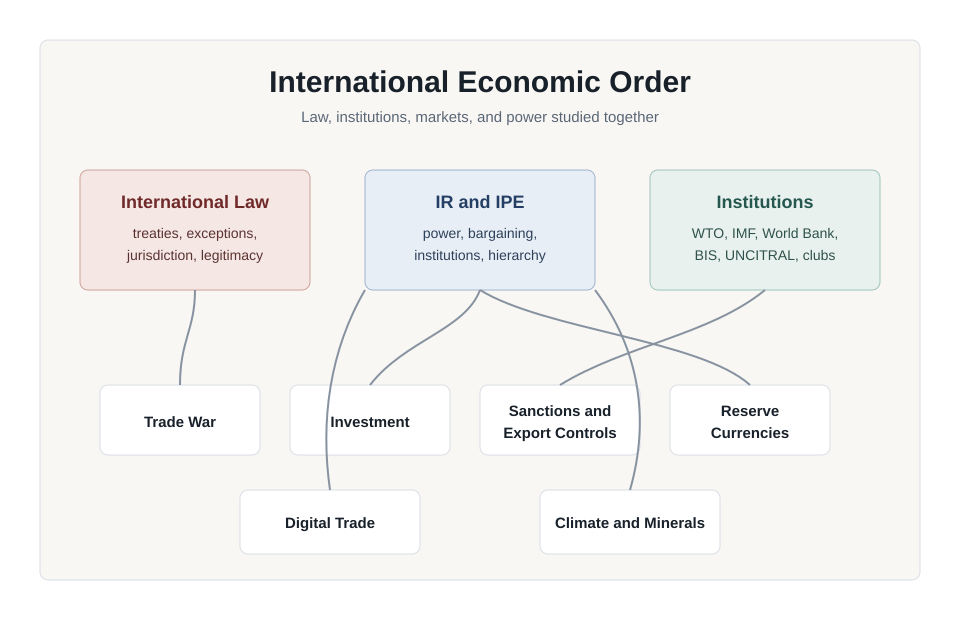

Theory-to-problem course companion
International Economic Law and Relations
A 12-week course on the international economic order as law, institutional bargain, political economy, and geopolitical contest.
- Code
- LW6167E
- Level
- P6
- Credits
- 3
- Medium
- English

Course architecture
From Topic Survey To Theory Engine
Professor
Professor Wang Jiangyu
Navigate
Course Research Pages
The detailed records now live on dedicated secondary pages. Use the navigation above to move between topics, rules, reports, academic works, media, and source indexes.
Topics
The twelve topic modules, filters, and links to individual topic pages.
Rules
International agreements, treaties, and legislation.
Reports
Policy papers and reports by organizations and think tanks.
Academic
Books, chapters, and journal/law review articles.
Media
Media, policy analysis, and current affairs sources.
Sources
Primary materials and institutional source links.